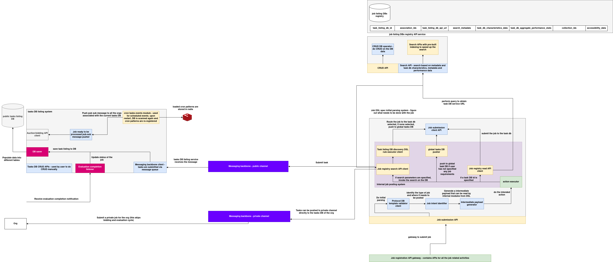

Job submission system architecture
The Job Submission and Task Listing System is a distributed orchestration framework responsible for receiving, validating, routing, and storing jobs across public and private task databases. It supports both public (bidding + evaluation) and private (direct) job flows. Built with modular rule-based routing, DSL-driven validation, and pub/sub-based job distribution, the system facilitates both human and autonomous task scheduling.


It consists of the following primary subsystems:
1. Task DB Listing System
This subsystem is responsible for registering task listings into the public task DB and notifying relevant orgs of job availability.
DB Saver
Persists job metadata into the public tasks listing DB. Triggered by external org submissions or auto-routed job flows.
Auction-Bidding API Client
Initiates bidding or evaluation steps as per auction workflows. Connected to job submission for public tasks.
Pub/Sub Message Pusher
Pushes task listing updates to all orgs associated with the task via a public messaging backbone. This enables org-wide awareness.
Cron Task Events Module
Handles job scheduling patterns stored in Redis. Automatically reloads and re-registers cron patterns when the DB service restarts.
Evaluation Completion Listener
Monitors completion of evaluation cycles and updates the status of corresponding task records in the listing DB.
Tasks DB CRUD APIs
Manually accessible APIs that allow users to query, insert, update, or delete entries in the public task DB.
2. Messaging Backbone
This component handles asynchronous message distribution across orgs and task DBs. There are two separate channels:
Messaging Backbone (Public Channel)
Used for pushing public jobs after listing. Tasks go through the bidding/evaluation lifecycle and are received by downstream agents.
Messaging Backbone (Private Channel)
Bypasses listing and auction. Directly used when orgs submit private jobs to their internal task DBs without exposing them to the public channel.
3. Job Submission API Service
This subsystem is responsible for processing incoming job specs, resolving their destinations, validating their format, and submitting them to the appropriate task DB.
Job Registry Search API Client
Searches for the appropriate task DB using job metadata, constraints, or resource needs.
Job Listing DB Discovery DSL Rule Executor
Executes DSL rules to determine routing and matching logic for job-to-task DB assignment.
Protocol DB Template Validator Client
Validates incoming job specs against expected schema and protocol templates. Ensures compliance before routing.
Job Intent Identifier
Determines what kind of job is being submitted and where it needs to go (e.g., global pool or specific task DB).
Intermediate Payload Generator
Generates a structured payload that can be consumed by internal modules like the action executor.
Action Executor
Performs task-specific logic once the job is routed — such as submitting to a remote DB, executing a webhook, or transforming metadata.
Job Submission Client API
Responsible for pushing validated jobs to the selected task DB or to the global pool if routing requires it.
Global Tasks DB Pusher
Pushes jobs to the global task pool if no target DB is specified.
4. Job Listing DB Registry
This registry maintains references to all available task DBs in the system. It enables lookup, metadata search, and routing based on job requirements.
CRUD API
Allows creation and management of task DB registry entries.
Job Registry Read API Client
Used to read metadata about task DBs for routing purposes.
Search API
Supports filtering based on DB characteristics, tags, collections, and accessibility features.
5. Org Interaction Interface
This layer allows organizations to either:
- Submit public jobs (which go through the auction and evaluation lifecycle)
- Submit private jobs directly to their internal task DBs using the private channel